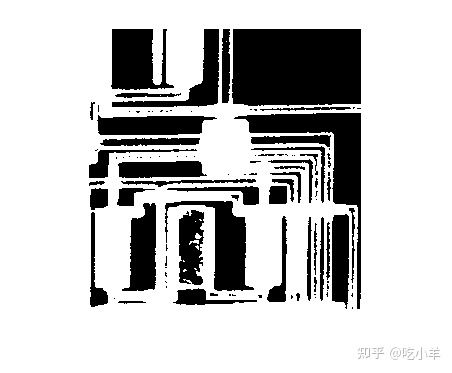
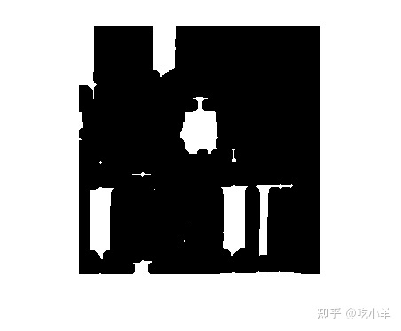

Home
此示例显示如何通过使用形态学腐蚀来去除二进制图像中的细线，所需邻域大于线的宽度。
读取并显示二进制图像。白线大约为四或五个像素。在某些地方，细线邻接并且总宽度接近十或十一像素。
BW1 = imread('circbw.tif');
imshow(BW1)

定义大于线宽的邻域。本示例使用半径为7像素的圆盘状结构元素，因此整体邻域大小为13 x 13像素。
SE = strel("disk",7)
SE =
strel is a disk shaped structuring element with properties:
Neighborhood: [13x13 logical]
Dimensionality: 2
腐蚀图像，将输入图像和结构元素指定为函数imerode的参数。
BW2 = imerode(BW1,SE);
显示腐蚀的图像。
imshow(BW2)

======================================================================
我的测试结果及程序
下面是我测试的代码：

注：本文根据MATLAB官网内容修改而成。